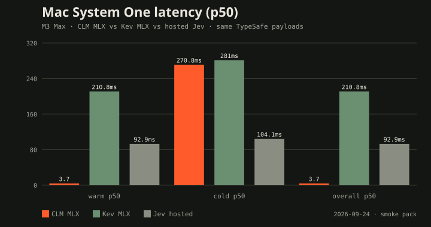
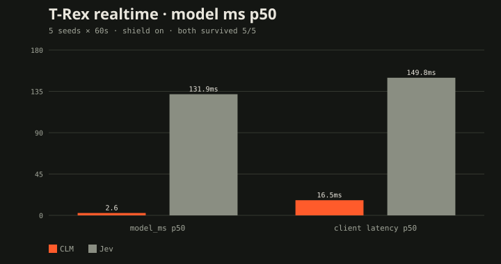
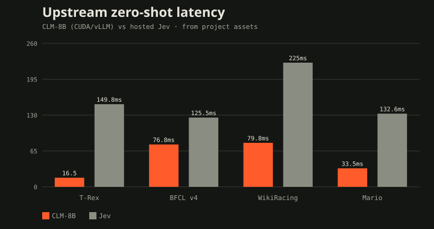
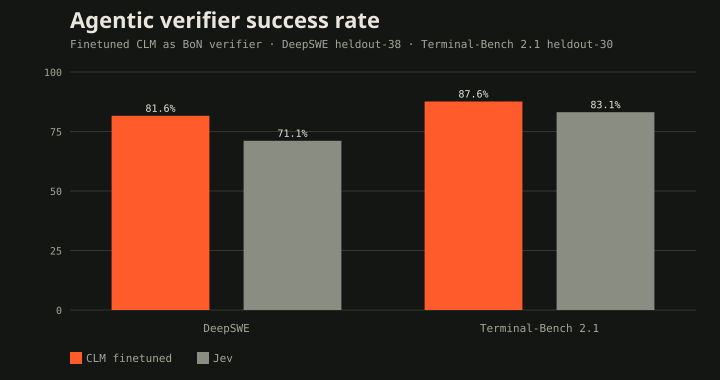

destroyrebuild · ship-log companion
CLM VS JEV ON MAC
Same TypeSafe System One payloads. Hosted Jev 92.9 ms warm. Local CLM on Metal 3.7 ms. Local Kev 210.8 ms. Benched 2026-09-24.
Disaggregated inference
One primitive: score a candidate against a state. Typed questions are closed candidate sets. Softmax over scaled cosine is the answer.
State textcontext + instructions
→
Qwen3-8B encoderlast-token · L2 · 4096-d
Action textsoption descriptions
→
Same encodercached independently
State head ~10M→ 512-d
cos × scale
Action head ~10M→ 512-d
softmax → noul / choice / scoreTypeSafe-compatible POST /v1/systemone
Mac path: clm-embed-mlx :8090 + clm-serve --device mlx :8700. Vector arena keeps projections warm so agent loops skip encode+project on hits.
Mac bench — M3 Max

~57× warm vs local Kev. Cold encode still ~271 ms. Agreement is smoke-only.
T-Rex realtime
Same Choice over jump/duck/run with planner labels. Shield on. Both survived 5/5 seeds × 60s.

CLM model_ms p50 median 2.6 ms · Jev 131.9 ms. Planner agree: CLM 0.66 · Jev 0.99.
Upstream CUDA (in-tree assets)


Finetuned verifier: DeepSWE 81.6% · Terminal-Bench 2.1 87.6% · 4.1–5.7× faster than Jev.
Don't stack Metal giants
- CLM wants ~8–12 GiB reclaimable (4-bit 8B + heads + small cache)
- Fat 35B mlx-serve with huge ctx/prefix/drafter can leave ~3–4 GiB free
- 35B ⊕ CLM-8B ⊕ Kev-4B → jetsam observed; benches ran sequential
- Preflight refuses load under pressure (CLM_MLX_MIN_FREE_GIB)